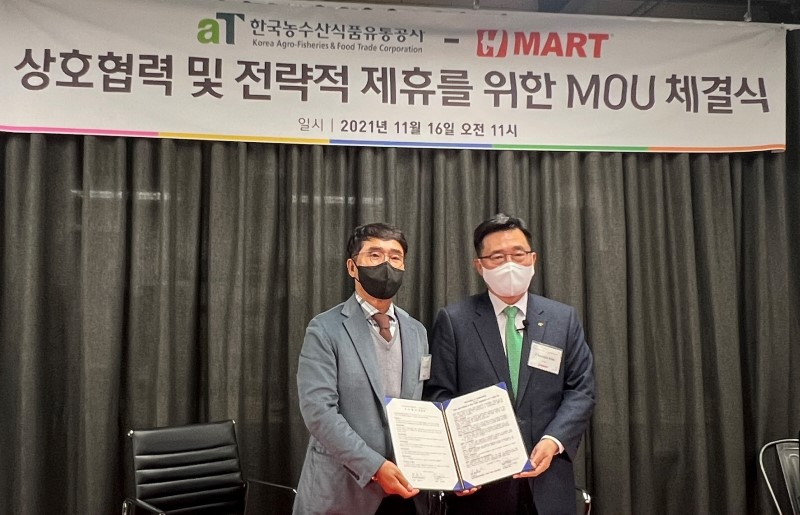
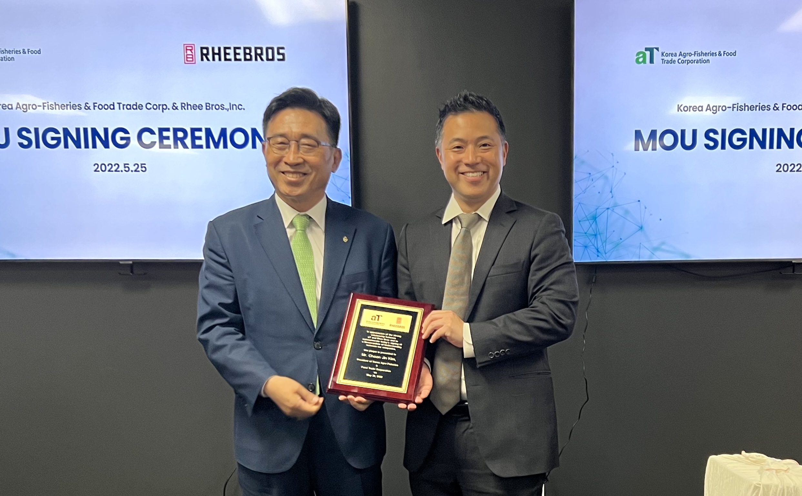
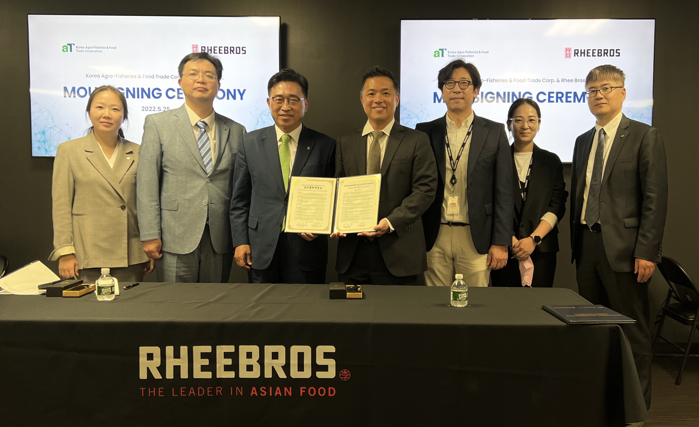

한국농수산식품유통공사 김춘진 사장은 '21년 11월 10일 서울 코엑스(COEX)에서 아시아 대표 백화점그룹 Parkson(百盛)과 온라인 업무협약(MOU)을 체결했다.
김 사장은 “이번 업무협약을 통해 한국 농수산식품의 수출 유망 품목 발굴과 정보교류 확대, 다양한 판매촉진 사업을 전개함으로써 중국에서 우리 농수산식품의 소비시장이 크게 확대될 것으로 기대된다”고 밝혔다.
아울러, 세계인이 함께 동참하여 지구를 지키는 저탄소 식생활 문화 캠페인 ‘글로벌 그린푸드 데이’와 ESG경영에도 적극 협력해 나가기로 했다.
한국농수산식품유통공사 김춘진 사장은 '21년 11월 16일 미국 전역에서 대규모 K-FOOD 판촉 행사를 진행하고 있는 H-MART(대표 권일연)의 본사와 판촉 행사 현장을 방문했다.
aT와 H-MART는 한국산 농수산식품의 수출확대를 위한 정보교류와 상호 협력 등에 대한 업무협약을 체결하고 세계인이 실천하는 저탄소 식생활 문화 캠페인 ‘글로벌 그린푸드 데이’ 등 ESG경영에도 적극 협력해 나가기로 했다.
aT는 11월 한 달간 미국 대형 유통업체인 H-MART의 70여개 매장을 활용하여 미국 서부와 동부지역 위주로 추진되던 K-FOOD 판촉을 중남부까지 확대하여 미국 내 새로운 소비시장 개척에 힘썼다.
H-MART 주요 매장에서는 ‘K-Food 홍보관’을 설치하여 한국 농수산식품의 우수성 홍보와 함께, 한국산 신선배를 비롯 김치, 인삼, 장류 등 130여개 품목에 대한 집중 판촉 행사가 진행하였다.
코로나19로 인한 물류상황 악화에도 불구하고 대미 농수산식품 수출액은 '21년 10월까지 13억 6630만달러로 '20년 같은기간 대비 10.5% 증가했으며, 김치, 인삼 등 건강식 품목들이 25% 이상 증가세를 보이는 등 역대 최고 실적을 기록하였다.
김춘진 사장은 “대미 수출 유망품목을 지속적으로 발굴해 나감과 동시에 H-MART와 같은 현지 대형 유통업체들과의 협력을 강화하여 대미 농수산식품 수출 확대에 더욱 힘쓰겠다”고 말했다.
한국농수산식품유통공사(사장 김춘진)와 리브라더스(대표 이라빈)는 '22년 5월 25일 미국 메릴랜드 소재 리브라더스 본사에서 K-Food 수출확대와 및 저탄소 식생활 확산을 위한 업무협약을 체결했다.
리브라더스는 미국 최대 아시안푸드 전문 유통회사로 한국식품 등 다양한 아시안식품을 미 전역과 세계 30여 국에 공급 중이며, 양사는 이번 협약을 통해 ▲K-Food 수출확대 ▲저탄소 식생활 ‘글로벌 그린푸드 데이’ 확산 등 ESG 실천에 협력하기로 했다.
한국농수산식품유통공사 김춘진 사장은 “미국 전역에 유통망을 가진 리브라더스와 협력하게 되어 K-Food 확산이 더욱 가속화될 것으로 기대된다”며, “또한, 지구를 지키는 저탄소 식생활에 리브라더스와 고객들이 적극 동참해주길 바란다”고 말했다.
리브라더스 이라빈 대표는 “건강에도 좋고, 맛도 좋은 K-Food의 이미지가 미국 주류사회에서 각인되고 있어, K-Food의 인기는 계속될 것”이라며, “미국 내 K-Food 유통 활성화와 ‘글로벌 그린푸드 데이’ 확산에도 힘을 보태겠다”고 말했다.
UN 식량농업기구(FAO)에 따르면 먹거리 관련 온실가스 배출량이 전 세계 온실가스 배출량의 31%를 차지할 만큼 심각해, 저탄소 식생활 등 세계인들의 일상 속 작은 실천이 시급한 상황이다.
공사가 추진하는 ‘글로벌 그린푸드 데이’는 세계인이 친환경․유기농 농식품을 구입하고 먹을 만큼 조리해 남김없이 먹음으로써 음식물 쓰레기를 최소화하여 지구를 지키는 저탄소 식생활 캠페인으로, 미국 대형유통업체 H-MART와 아시아 대표 백화점기업 바이셩(百盛/Parkson) 그룹, 전 세계 64개국 138개 지회, 2만 8천여 회원을 보유한 World OKTA(세계한인무역협회) 등과 협약을 맺고 전 세계로 캠페인을 확산하고 있다.
한편, 한국 농수산식품의 대미 수출실적은 최근 글로벌 물류대란 악재에도 불구하고, 지난해 역대 최대 수출인 16억6천만 달러를 기록했으며, 올해도 4월말 기준 전년 대비 18.9% 성장한 6억4천3백만 달러로 높은 성장세를 유지하고 있다.